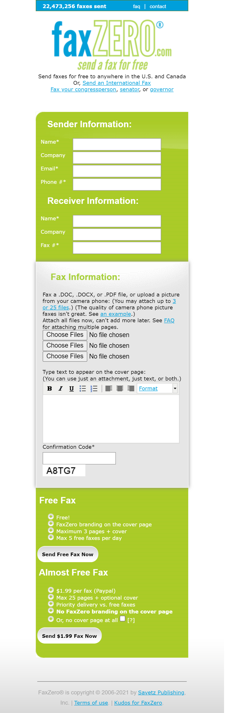
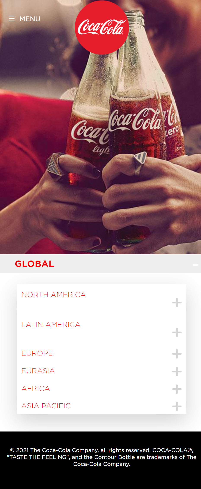

Hick's Law
FaxZero
FaxZero.com
This website exemplifies Hick’s Law because it is simplified yet not oversimplified. The information needed is clear and concise. The colors direct each section and help the eye to follow the pattern required to send a fax. The options are simple and easily chosen. You choose to send 3 pages plus cover for free or up to 25 pages plus optional cover for $1.99. The time it takes to send a fax with this website is quite fast.
Rule of Thirds
Amazon
Amazon.com
Amazon has designed their webpage using the rule of thirds. They want to draw your eye to certain content, yet they have options available. THe header is available on the top third to allow the customer to search for particular items. The middle third is divided into thirds again and they lead you to their desired options for you. The bottom third is left as the footer with information for those needing that information.
Repetition
Coca-Cola
Coca-Cola.com
Coca-Cola uses the company logo, traditional Coca-Cola font, red and white colors, and the hour glass bottle for repetition. The repetition of these elements helps the consumer to recognize the company and its products. The colors, font and logo are found throughout the webpage and each subpage. The hourglass bottle are found occasionally throughout the website, but it is still very recognizable for the Coca-Cola company.